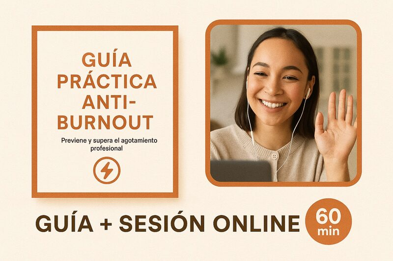

Adolescentes en Valencia
- TDAH, autoestima, regulación emocional e identidad.
- Motivación, apatía académica y decisión vocacional.
- Formato cerrado con acompañamiento también a familias.
Psicólogo General Sanitario en Valencia · CV11515
Te ayudo a ver lo que no ves; aquello que, sin que lo sepas, está detrás de tu malestar. Porque lo que te trae a consulta casi nunca es lo que realmente te pasa.
Psicólogo General Sanitario, CV11515.
Más de una década en consulta privada en Valencia ayudando a adultos, adolescentes, deportistas profesionales y parejas a entenderse por dentro para vivir mejor por fuera.
Mi enfoque es psicoanalítico pero sin jerga. Trabajo con ansiedad, depresión, estrés, dependencia emocional, trastornos de personalidad, bipolaridad, duelos y todo lo que frena sin que sepas por qué. El objetivo siempre será ayudarte a ver lo que no ves; aquello que, sin que lo sepas, está detrás de tu malestar.
Autor de Los Engranajes de la Mente y Burnout: El libro para no petar.
Cuatro territorios, un mismo enfoque.
Ansiedad, depresión, estrés, autoexigencia, burnout, trastornos de personalidad, bipolaridad, duelos y crisis vitales. Si sientes que algo te frena pero no sabes exactamente qué es, aquí lo trabajamos.
Construcción de identidad, autoestima baja, ansiedad en la adolescencia, depresión juvenil, conflictos familiares y gestión emocional. La adolescencia es una etapa de transformación profunda: el acompañamiento psicológico profesional marca la diferencia.
Presión competitiva, bloqueos de rendimiento, ansiedad por competición, gestión de lesiones, estrés deportivo y transiciones de carrera. Un espacio donde no tienes que demostrar nada.
Dependencia emocional, conflictos que se repiten, desconexión emocional, crisis, celos y reconstrucción del vínculo. La terapia de pareja no es un juicio; es un espacio para entender qué le pasa a cada uno y qué le pasa a la relación.
Los talleres pasan a primer plano porque son los programas con lanzamiento prioritario. Aquí tienes el acceso más visible para descubrirlos y reservar tu plaza con facilidad.
Aprende a frenar la urgencia mental y volver a elegir
Para mujeres que quieren sentir que valen sin necesitar que nadie se lo confirme
Ansiedad Laboral → Sentido Profesional
Dos grupos reducidos en Valencia para septiembre de 2026, pensados para trabajar aquello que la presión académica no alcanza a nombrar.
Autoestima, regulación emocional e identidad en adolescentes con TDAH
Apatía académica, confusión vocacional y presión familiar
Si quieres revisar la información del dossier tranquilamente, deja tu correo y te mostramos el acceso directo al PDF desde aquí mismo, dentro del bloque de talleres.
Formaciones para equipos y organizaciones.

Del impulso inconsciente al hábito visible en una semana.
Sublima la presión en creatividad y resultados.
Del silencio oculto al feedback transformador.

Comprendiendo el Yo, el Ello y el Superyó desde una mirada psicoanalítica clara y aplicable; cómo se forman, cómo chocan entre sí y cómo ese conflicto se traduce en ansiedad y burnout.
Comprar en Amazon


Manual de Emergencia para trabajar sin odiarte tanto.
Comprar en Amazon
El cansancio que no se cura durmiendo
32 minutos sobre el agotamiento que no se arregla con descanso. Hablamos del síndrome del impostor, el juez interno, la dependencia emocional y las señales de que tu trabajo te está enfermando. Psicología aplicada, sin atajos motivacionales.
Generado con IA a partir de los artículos de Insights de TWIM Project

Descubre los pasos clave para reconectar con tu energía y mantener un rendimiento sostenible.
Si quieres pedir cita, preguntar por una conferencia o resolver una duda, escríbeme.
Trabajo desde la orientación psicoanalítica. No nos quedamos en el síntoma, buscamos juntos el origen real de lo que te pasa para que el cambio sea profundo y duradero. Sin jerga innecesaria.
Ambas modalidades. Las sesiones presenciales son en mi consulta de Valencia. Las sesiones online se realizan por videollamada y funcionan con la misma profundidad.
Sí. Acompaño a deportistas profesionales en la gestión de presión competitiva, bloqueos, lesiones y transiciones de carrera, desde un enfoque psicológico que va más allá del rendimiento superficial.
Sí. Trabajo con adolescentes que atraviesan dificultades propias de la adolescencia: problemas de autoestima, ansiedad, conflictos familiares, construcción de identidad y gestión emocional. Es una etapa clave donde el acompañamiento profesional puede marcar un antes y un después.
Las sesiones individuales duran 50 minutos. En terapia de pareja, 60 minutos. La frecuencia de las sesiones depende del encuadre que acordemos ambas partes.
Daniel Orozco Abia es Psicólogo General Sanitario colegiado (CV11515) con más de una década de experiencia clínica en Valencia. Su enfoque se basa en el psicoanálisis como herramienta para guiar procesos de transformación personal. Es autor de Los engranajes de la mente y creador de TWIM Project.
El precio varía según el profesional y la modalidad. En TWIM Project, las tarifas se adaptan al tipo de terapia (individual, de pareja o deportiva). Puedes contactar directamente para consultar disponibilidad y condiciones.
TWIM Project (The World Is Mind Project) es la plataforma fundada por Daniel Orozco Abia que integra consulta psicológica, divulgación en salud mental y programas formativos. Incluye terapia clínica, conferencias, el canal de YouTube y publicaciones como Los engranajes de la mente.
Si sientes malestar emocional persistente, ansiedad, dificultad para descansar, bloqueos recurrentes o la sensación de vivir en piloto automático, son señales de que un proceso terapéutico puede ayudarte. No hace falta estar en crisis para empezar terapia.
Sí. La ansiedad y la depresión son dos de los motivos de consulta más frecuentes. Trabajo desde un enfoque psicoanalítico que no se queda en el síntoma: buscamos juntos el origen del malestar para que el cambio sea profundo. Tanto en adultos como en adolescentes.
Sí, tanto en terapia individual como a través del programa específico "Deja de Buscarte en Otros". La dependencia emocional tiene raíces profundas que van más allá de la relación actual; entender el mecanismo es el primer paso para desactivarlo.
Si llevas tiempo sintiéndote mal, con ansiedad, estrés, tristeza persistente, problemas de autoestima o dificultad en tus relaciones, y sientes que por más que lo intentas no consigues mejorar por tu cuenta, es un buen momento para consultar. No hace falta estar en crisis para pedir ayuda profesional.
El precio de las sesiones varía según la modalidad (individual, pareja, online). Puedes consultarme directamente a través del formulario de contacto o por email y te informo sin compromiso.
Psicólogo en Valencia con más de una década de experiencia clínica. Trabajo con adultos y adolescentes que atraviesan ansiedad, depresión, estrés, dependencia emocional, trastorno límite de personalidad (TLP/borderline), bipolaridad, burnout, duelos, crisis vitales, problemas de autoestima y dificultades en las relaciones. También acompaño a deportistas profesionales y parejas. Sesiones presenciales en Valencia y terapia online.